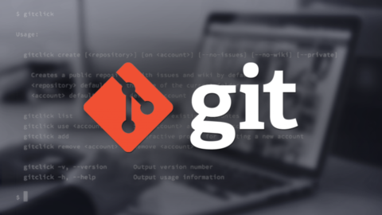

Historia de Git

En los albores del siglo XXI, cuando el código fluía libre y las batallas del software eran intensas,
surgió una necesidad crítica en la comunidad del núcleo de Linux: un sistema de control de versiones que fuera rápido, seguro y descentralizado.
Hasta entonces, el equipo de desarrollo del kernel de Linux usaba un sistema propietario llamado BitKeeper.
Sin embargo, en 2005, una disputa sobre su licencia hizo que los desarrolladores perdieran el acceso gratuito al sistema.
Fue entonces cuando Linus Torvalds, creador del kernel de Linux y caballero del código abierto,
decidió forjar su propia herramienta: Git. En apenas unas semanas, creó un sistema que cumpliera con tres principios esenciales:
- -Velocidad.
- -Integridad de los datos.
- -Soporte para desarrollo distribuido.